DeviantArt Mirror
This is a backup site. If you cite or quote the articles listed below, please refer to the original DeviantArt version.
Original Site

DeviantArt
If you are viewing on a smartphone, the main text may be collapsed. Please click "Show Full Description" to view the full content. GIFs don't autoplay, please click them to play.
Since DeviantArt has become harder to browse without logging in and isn't very mobile-friendly, I decided to create an external mirror.

Mirror Pages
Just a place to archive buried info and appreciate the incredible amount of detail in the Silent Hill series (especially Silent Hill 4). I love looking back at the tiny details and lore the devs put so much work into.
Last updated on DeviantArt: 2026-08-28
Official Sources - Analysis
From the Old Official Website Developer's Voice
-
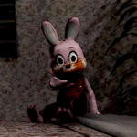
[SH4] Robbie the Rabbit Knows Everything
Vol. 10: "Robbie the Rabbit's Travel Diaries" -
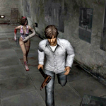
[SH4] Are Game Creators Good at Games?
Vol. 9: "Teaching How the Changes in the Endings Are Triggered" Chief Programmer: Kosuke Iwakura -
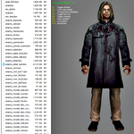
[SH4] The World the Killer Is Trying to Create
Vol. 8: "The Design Concept" Chief Designer: Masashi Tsuboyama -
 [SH4] Stories of Struggles in Cutscene Production
[SH4] Stories of Struggles in Cutscene Production
Vol. 7: "Stories of Struggles in Movie Production" Demo Movie: Atsushi Tsujimoto -
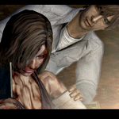
[SH4] Dedication to the Scenario
Vol. 6: "Dedication to the Scenario" Director and Scenario: Suguru Murakoshi -
 [SH4] SH4 Launched as a Silent Hill from the Start
[SH4] SH4 Launched as a Silent Hill from the Start
Vol. 2: "The Terror of the Room" Director and Scenario: Suguru Murakoshi -
 [SH4] You Yourself Who Ended Up in the Room
[SH4] You Yourself Who Ended Up in the Room
Another Crimson Tone "The First Encounter Between Him and the Victims" -
 [SH2] James, 29, Clerk at a Small Company
[SH2] James, 29, Clerk at a Small Company
Introducing the English and Japanese Content from SH2's Old Official Website -
 [SH4] It Could Have Been The Room - Silent Hill (Jk)
[SH4] It Could Have Been The Room - Silent Hill (Jk)
From "Silent Hill 4 Official Guide Complete Edition" -
 [SH1-SH4] SH1 to SH4 Era and Timeline
[SH1-SH4] SH1 to SH4 Era and Timeline
From "Silent Hill 4 Official Guide Complete Edition" -
 [SH2, SH4] Did James Disappear 10 Years Back, or Just a Few Years Back?
[SH2, SH4] Did James Disappear 10 Years Back, or Just a Few Years Back?
From "Silent Hill 4 Official Guide Complete Edition" -
 [SH4] Lost memories
[SH4] Lost memories
Old Official Silent Hill 4 Websites and the Victim Info They Contained -
 [SH4] Walter's Job Hopping
[SH4] Walter's Job Hopping
How SH4's Victim Files Reveal the Hardships He Went Through, Haha -
 [SH4] Evidence and Weapons
[SH4] Evidence and Weapons
Items and Weapons Listed in SH4's Victim Files -
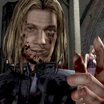
[SH4] Did You Know? Walter Has Musical Talent?!
Trivia About SH4's Soundtrack -
 [SH4] Silent Hill 4 and Japanese Ghost Stories
[SH4] Silent Hill 4 and Japanese Ghost Stories
The Connection Between Old Japanese Ghost Stories, Urban Legends, and SH4 -
[SH4] Innovation and Series Balance
PS WORLD "SILENT HILL4 -THE ROOM-" Special Interview: Producer Akira Yamaoka talks about "A New Stage" -
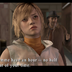
[SH3] Hidden Genre: Love Adventure???!!
PS WORLD "SILENT HILL3" Special Interview: Producer Akira Yamaoka discusses featuring the series' first female protagonist. -
 [SH2] Honey Mode and Love as What They Expressed
[SH2] Honey Mode and Love as What They Expressed
Dengeki Online "Silent Hill 2" producer Akihiro Imamura's long interview -
 [SH4] Awkward Character Prototypes?!
[SH4] Awkward Character Prototypes?!
The "Contradictions" in the Official Interview Weren't Contradictions After All. And Huge Thanks! -
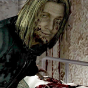
[SH4] The Intent Behind Henry and Walter's Gazes?!
The Effective Use of the Characters' Gazes...? -
 [SH4] Proving Henry's Innocence
[SH4] Proving Henry's Innocence
He Didn't Steal Anything, Haha -
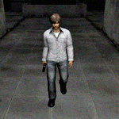
[SH4] Henry's Yakuza Style Walk?!
Why Does He Move Like a Yakuza? Comparing Each Character's Walking Animation -
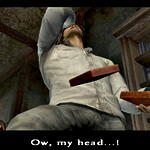
[SH4] Henry's Stink-Response Possession Level
His Reactions Also Change Depending on Her Possession Level -
 [SH4] Pickaxe of Despair
[SH4] Pickaxe of Despair
It Says "Written on It," and Yet... -
 [SH4] This is Why I Love Him
[SH4] This is Why I Love Him
Such an Adorable Airhead, Haha -
 [SH4] One-Weapon Mode Unlock Bonus (what I call it)
[SH4] One-Weapon Mode Unlock Bonus (what I call it)
I Went Through All That Trouble Just to Unlock This -
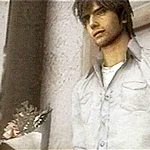
[SH4] Henry's Bouquet
I'm Head Over Heels for His Choice of This Bouquet -
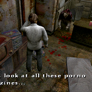
[SH4] Trying to Analyze the Rare Lewd Magazines
Let's Take a Look at the Rare Adult Magazine Texture in Room 301 (SFW) -
 [SH4] Mysterious Poster at the Station: An Alien?!
[SH4] Mysterious Poster at the Station: An Alien?!
The Mysterious Poster at South Ashfield Station -
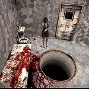
[SH4] Beings Seen Through the Water Prison Peephole
Even the Small Details Are Detailed -
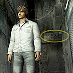
[SH4] Welcome to South Ashfield Chinatown
Decoding the Chinatown Signs in B12 of the Building World and Mapping the Area -
 [SH4] Henry's Long, Long Day
[SH4] Henry's Long, Long Day
The Passage of Time in the Game and the Mystery of His Stubble, Haha -
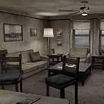
[SH4] Room 302: The Beauty of Imperfections
Rediscovering the Incredible Detail in the Room -
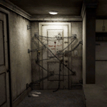
[SH4] The Meaning and Design of That Iconic Door
Heavily Homaged, Yet Still One of a Kind: This Door -
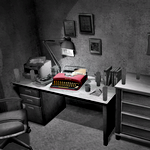
[SH4] Things Henry Doesn't Have in His Room
And His Job, Including "Official" Info (?) -
 [SH4] Looking into Henry's Bathroom
[SH4] Looking into Henry's Bathroom
I-I'm Not Stalking Him... This Is a Serious Investigation! -
 [SH4] Let's Check Out What's in Henry's Kitchen
[SH4] Let's Check Out What's in Henry's Kitchen
His Kitchen Actually Has More Stuff Than You'd Expect -
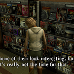
[SH3, SH4] Henry's Bookshelf and SH3's Bookstore
I'm Still Waiting for a Remaster That Lets Us Read His Bookshelf Clearly ← Certified Degenerate -
 [SH4] Countless Faces on the Wall
[SH4] Countless Faces on the Wall
How Many Faces Did You Find? Faces, Faces Everywhere -
 [SH4] Photo in the Bedroom: The rarest haunting in SH4
[SH4] Photo in the Bedroom: The rarest haunting in SH4
More Annoying Than Scary... -
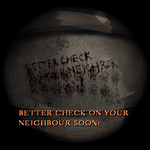
[SH4] Two Knocking Sound Events
The Famous Version and the Lesser-Known One -
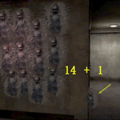
[SH4] How to Reproduce the Doll in the Hallway
The Wall Doll Sometimes Walks Down the Hall. I Swear. -
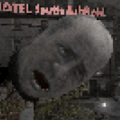
[SH4] How to Spot the Falling Severed Head Outside the Window
Some Are Easy to Find, Others Are All About Timing -
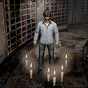
[SH4] Useless Trivia About Holy Candles
Holy Candles Aren't Just for Exorcism!? -
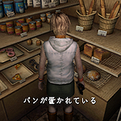
[SH3] Heather Never Say Pan Desu in Japanese
The "It's Bread" Meme Isn't Known in Japan -
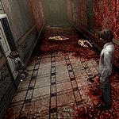
[SH4] Who Took Down the Dogs?
Who's the Strongest Character in This Game? Hahaha. -
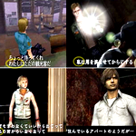
[SH1-SH4] They Speak Formally in Japanese
First-Person Pronouns (Original Japanese Version) -
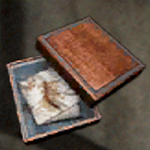
[SH4] A Mother's Cord
The Meaning of the Umbilical Cord in Japanese Culture -
 [SH4] Wake Up Ma: The Most Beautiful Picture Book
[SH4] Wake Up Ma: The Most Beautiful Picture Book
Walter's Potential Happy Ending
From the Old Official Website
From the Official Guides
From the Old Official Website "SH2004 . com"
From the Official OST
From Other Web Articles
Game Exploration - Texture Analysis
Textures & Cutscenes
Discovering Room 302
Event Triggers
Others